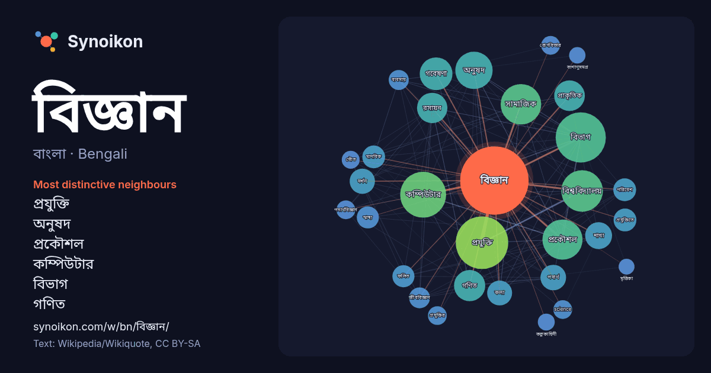

বাংলা · Bengali · popular word
বিজ্ঞান
“science” · The words found around it in 1754 instances from Bengali Wikipedia, Wikiquote.

Most distinctive neighbours
- প্রযুক্তি 64×
- অনুষদ 57×
- প্রকৌশল 49×
- কম্পিউটার 49×
- বিভাগ 43×
- গণিত 38×
- রসায়ন 37×
- প্রযুক্তিতে 27×
- ফলিত 25×
- সামাজিক 24×
- কলা 24×
- মানবিক 22×
- বিশ্ববিদ্যালয় 22×
- জীববিজ্ঞান 22×
- রোগবিস্তার 21×
- science 20×
- দর্শন 20×
- প্রাকৃতিক 19×
- পদার্থ 19×
- ব্যবসায় 17×
× = how many times more often than in general Bengali Wikipedia text.
Most frequent neighbours
- প্রযুক্তি 165
- বিভাগ 150
- কম্পিউটার 126
- বিশ্ববিদ্যালয় 103
- সামাজিক 98
- প্রকৌশল 96
- অনুষদ 83
- গবেষণা 64
- গণিত 58
- প্রাকৃতিক 56
- রসায়ন 55
- শিক্ষা 55
- একজন 51
- জাতীয় 46
- শাখা 43
- কলেজ 41
- পদার্থ 39
- ইতিহাস 38
- দর্শন 38
- কলা 37
In context
- বিজ্ঞান হলো একটি পদ্ধতিগত শৃঙ্খলা, যা পরীক্ষাযোগ্য অনুমান ও ভবিষ্যদ্বাণীর মাধ্যমে জগত সম্পর্কে জ্ঞান গঠন ও সংগঠিত করে ।সংক্ষেপে বললে বিজ্ঞান হলো বিশেষ Wikipedia snippets · বিজ্ঞান
- ইসলাম এবং বিজ্ঞান বলতে বোঝানো হয় ইসলাম ধর্ম ও এর অনুসারী মুসলমানদের সঙ্গে বিজ্ঞানের সম্পর্ককে। মুসলিম পণ্ডিতেরা কুরআনে বর্ণিত বিষয়গুলির সাথে বিজ্ঞানীদের Wikipedia snippets · ইসলাম ও বিজ্ঞান
- কমন্সে প্রাকৃতিক বিজ্ঞান সংক্রান্ত মিডিয়া রয়েছে। উইকিঅভিধানে প্রাকৃতিক বিজ্ঞান শব্দটি খুঁজুন। আধুনিক বিজ্ঞানের ইতিহাস প্রাকৃতিক বিজ্ঞান Contains updated Wikipedia snippets · প্রাকৃতিক বিজ্ঞান
- বাংলাদেশ বিজ্ঞান একাডেমী হলো বাংলাদেশের বিজ্ঞানী ও প্রযুক্তিবিদদের একটি জাতীয় ফোরাম যা ১৯৭৩ সালে প্রতিষ্ঠিত হয়। এটি বাংলাদেশ সরকার পরিচালিত এবং বিজ্ঞান ও প্রযুক্তি Wikipedia snippets · বাংলাদেশ বিজ্ঞান একাডেমি
- স্নায়ুবিজ্ঞান, ভাষাবিজ্ঞান, দর্শন, কম্পিউটার বিজ্ঞান, নৃতত্ত্ব, জীববিজ্ঞান, ইত্যাদি জড়িত। সংজ্ঞানাত্মক বিজ্ঞান একটি বিস্তৃত গবেষণাক্ষেত্র, যাতে সংজ্ঞান (cognition) Wikipedia snippets · সংজ্ঞানাত্মক বিজ্ঞান
- ছিল বিজ্ঞান কল্পকাহিনী। ইংরেজিতে একে “সাইন্স ফিকশন” বলা হয়। বাংলা ভাষায় প্রথম বিজ্ঞান কল্পকাহিনী লেখা শুরু হয় ঊনবিংশ শতাব্দীতে। বাংলা বিজ্ঞান কল্পকাহিনী Wikipedia snippets · বিজ্ঞান কল্পকাহিনি
- কোষবিজ্ঞান, অনাক্রম্যবিজ্ঞান, প্রাণী-আচরণ বিজ্ঞান, ঔষধ প্রস্তুতি ও ব্যবহার বিজ্ঞান, বাস্তুবিজ্ঞান, ইত্যাদি। জৈবনিক বিজ্ঞানের আরেকটি প্রধান শাখা হল মনের প্রকৃতি Wikipedia snippets · জৈবনিক বিজ্ঞানের তালিকা
- ফিশারিজ কলেজকে বঙ্গমাতা শেখ ফজিলাতুন্নেছা মুজিব বিজ্ঞান ও প্রযুক্তি বিশ্ববিদ্যালয় এর মাৎস্য বিজ্ঞান অনুষদ হিসেবে আত্ত্বীকরণ করা হয়। প্রায় ৫ কোটি টাকা Wikipedia snippets · জামালপুর বিজ্ঞান ও প্রযুক্তি বিশ্ববিদ্যালয়
More Bengali words
- অরণ্য
- আয়না
- ইতিহাস
- ঈশ্বর
- কাজ
- কুকুর
- ক্ষমতা
- খাদ্য
- গান
- গ্রীষ্ম
- ঘড়ি
- ঘণ্টা
- ঘোড়া
- ছায়া
- জননী
- জলবায়ু
- জীবন
- ঝড়
- টাকা
- ট্রেন
- দারুচিনি
- দ্বীপ
- নক্ষত্র
- নীরবতা
- পরিবার
- পানি
- পাহাড়
- প্রকৃতি
- বাগান
- বিড়াল
- বৃষ্টি
- ভাষা
- মধু
- মরুভূমি
- মানচিত্র
- মৃত্যু
- রাস্তা
- রুটি
- লবণ
- শরৎ
- শহর
- শিল্প
- শীত
- সত্য
- সময়
- সেতু
- সোনা
- স্বাস্থ্য
- হৃদয়
Precomputed on 2026-10-09 with default settings (±5 words, medium corpus). The interactive map can refresh it with live data.